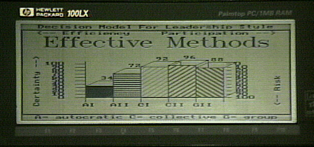

Analysis Chart
During the last 40 years, 14 situations have been identified as important in decision making. Each
situation has a set of leadership styles that will generate acceptable
quality decisions. The
autocratic leader will be effective in 6; leaders who accept the vote of followers effective in 11.
Because there are 2 situations where a democratic style is the only style that can lead to quality
decisions (as compared to 0 situations for autocratic) many students of leadership believe that
group decisions are best. This ignores the 3 situations where group process can actually result in
poor quality decisions. It also ignores the benefits to be derived because of the efficiency
associated with autocratic leadership styles.
The following Decision Maker bar chart graphically portrays the trade off between efficiency and
participation for leadership styles known to be effective in an unknown situation.

The Wall Street Journal, New York Times, and similar publications, report situations
and
describe leaders at corporate, government and not-for-profit organizations. By using expert
systems, such as those developed by Mighetto & Associates, evidence may be gathered
from the
publications supporting conclusions regarding delegation, the use of juries, legislation,
government, Total Quality Management, project management, downsizing, the need for a
meeting, the behavior of successful leaders, the importance of leadership to stock values, etc.
[Home] [Case
Study] [Decision Tree] [Deep
Knowledge][Map]
http://www.eskimo.com/~mighetto/lschart.htm - last update March 23,
2001